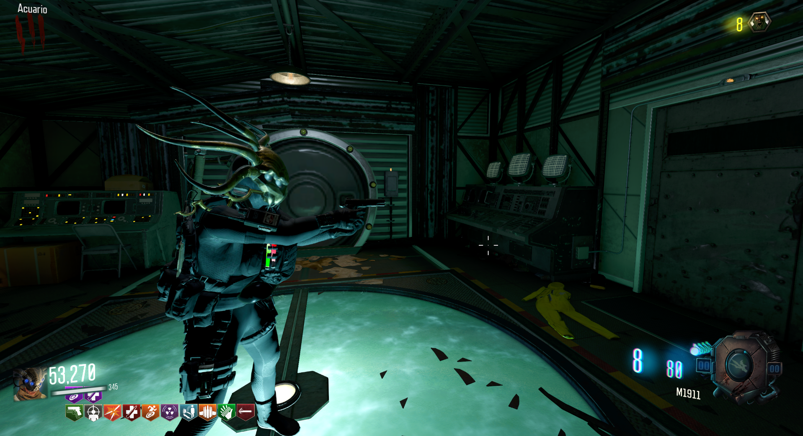
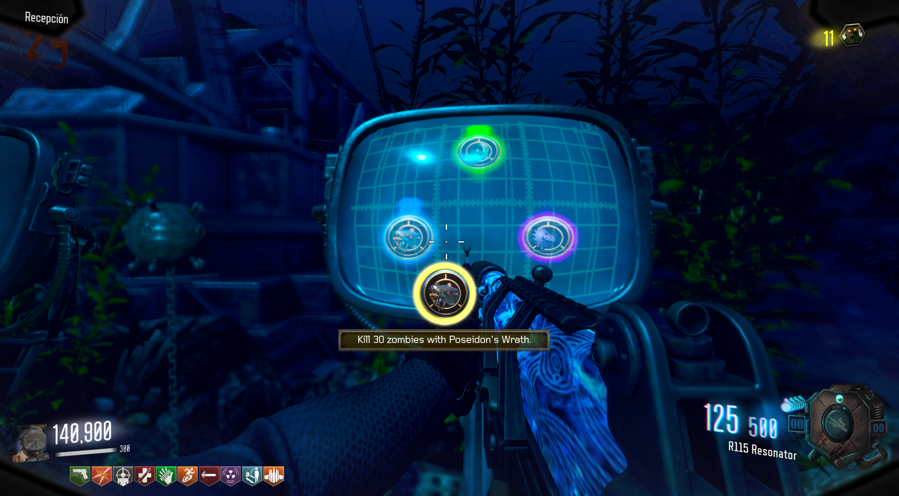
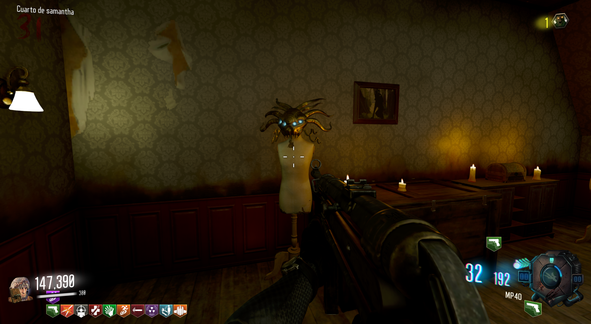

Máscara de Shadowman (Leviathan)
Propiedades de la máscara:
+1 Impacto de todos los enemigos.
Duración de esprintar mejorada.
Capacidad de respirar bajo el agua.
-33% de daño recibido de todos los enemigos.
+50% de daño a todos los enemigos.
Cómo obternerlo:
Debemos de completar los tres desafíos que nos aparecen en el Spawn:

Una vez completados los tres, escucharemos el sonido de confirmación y podremos ir al portal cerca del Almacén.

En el Cuarto de Samantha encontraremos la máscara.
